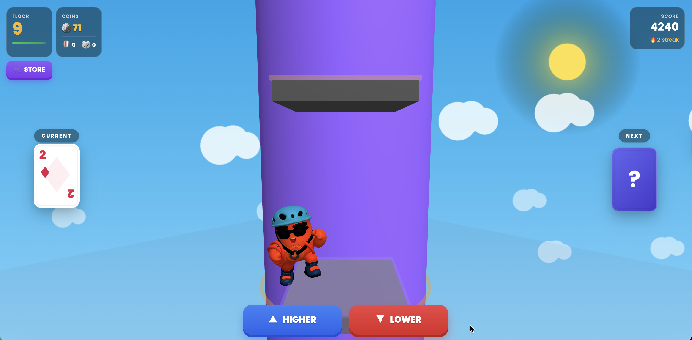
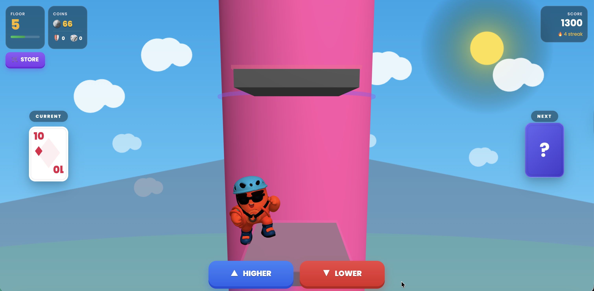
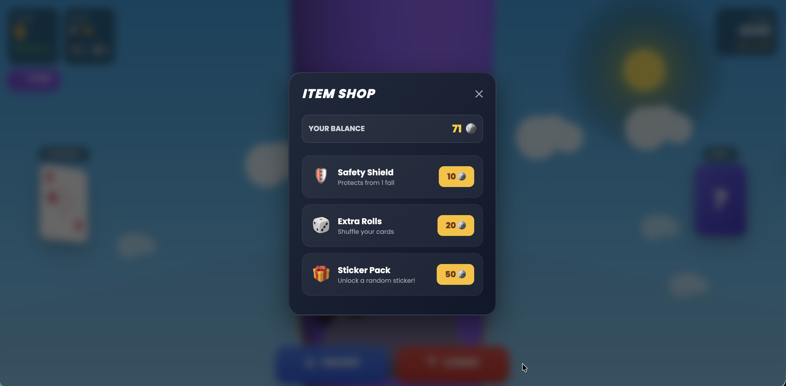

Screens




Product Goal
Lift mid-week engagement by creating a recurring event that feels high-stakes, easy to understand, and strong enough to pull players back during the softer part of the week.
My Role
- Defined the core feature loop, event cadence, and risk-reward logic
- Outlined reward structure, economy sinks, and monetization boundaries
- Created a KPI plan and playable prototype to validate the concept quickly
Problem / Opportunity
Casual games often have a mid-week engagement gap: players are still familiar with the game, but there is not always a strong reason to come back right now. The opportunity was to create an event that adds tension and anticipation without becoming too complex or too punishing.
What I Defined
- Weekly event cadence and rules for entry, progression, and cash-out decisions
- Reward logic, streak behavior, and failure states that keep the loop readable
- Economy sinks such as safety shields and rerolls, with player-first constraints
- Tuning hooks and configuration points so the feature can evolve after early learning
- KPI tracking plan for participation, retention impact, session depth, and fairness signals
How I Worked with Engineering / QA
This was a solo concept plus prototype, so the main goal was to structure the feature as if it were preparing for implementation. I translated the idea into clear game states, reward resolution rules, edge cases, and tracking points so engineering and QA handoff would be easier to reason about.
Metrics or Success Criteria
- D3-D7 retention lift during event week
- Participation rate among active players
- Average event session length and floor depth
- Coin spend behavior and sink balance
- Fairness sentiment and pay-to-win perception
Iteration / What Changed
Early prototype testing showed that more complex floor types diluted the main tension. I simplified the loop so every step comes back to one readable decision: cash out now or risk the next floor for more.
Next Iterations
- Add seasonal themes and reward rotation to keep the event fresh
- Test a social layer such as highest-floor sharing or weekly leaderboard placement
- Explore a premium progression layer that adds value without blocking free players
Experience the Core Mechanic
Play the prototype to see how the risk-versus-reward loop feels in a lightweight test environment.
Play Lucky Tower